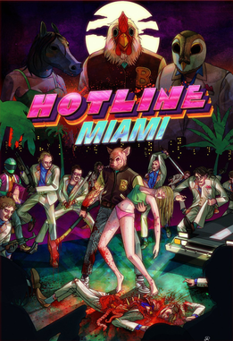
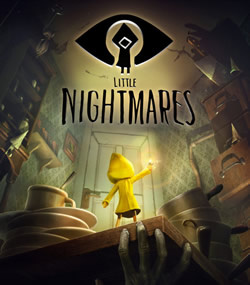

Top Jogos Indies:
Hotline Miami:
Hotline Miami é um jogo eletrônico 2D de ação do subgênero shoot 'em up.
Criado por Jonatan Söderström e Dennis Wedin,
ambos o desenvolveram usando a designação Dennaton Games,
com o game sendo lançado pela Devolver Digital no dia 23 de outubro de 2012
para Microsoft Windows.
Situado em Miami no ano de 1989,
a trama do jogo gira em torno de um homem conhecido como Jacket,
o qual vem recebendo telefonemas instruindo-o
a cometer massacres contra a máfia russa local.
Little Nightmares:
Little Nightmares é um jogo eletrônico de quebra-cabeça em plataforma
com elementos de terror desenvolvido pela Tarsier Studios
e publicado pela Bandai Namco Entertainment.
O jogador controla Six, uma menina vestida em uma capa de chuva amarela
que cobre grande parte do seu rosto, que está presa na "A Bocarra"
um navio misterioso que serve os caprichos de criaturas doentes e poderosas.
Depois acordar nas profundidades mais baixas da "Bocarra",
Six decide escapar de seu confinamento,
tendo momentos regulares de fome excruciante.
Hollow Knight:

Hollow Knight é um jogo indie de gênero metroidvania
desenvolvido e publicado pela Team Cherry.
No jogo, um cavaleiro sem nome explora um reino em ruínas,
habitado por insetos, para livrá-lo de uma infecção
causada por um deus esquecido.
O jogador deverá derrotar incontáveis inimigos poderosos e
desbloquear habilidades novas para prosseguir
no jogo e para explorar o reino esquecido
em que se encontra e descobrir seus segredos.
Celeste:
Celeste é um jogo de plataforma no qual os jogadores controlam
uma garota chamada Madeline enquanto ela sobe em uma montanha,
evitando vários obstáculos mortais. Além de pular e escalar paredes
por um período limitado de tempo, Madeline tem a capacidade
de realizar um traço no meio do ar nas oito direções cardeais.
Celeste é um jogo eletrônico de plataforma desenvolvido
canadenses Maddy Thorson e Noel Berry, com arte feita pelo
estúdio brasileiro MiniBoss. O jogo foi originalmente criado como um protótipo
de quatro dias durante uma game jam,
e depois foi expandido para o seu lançamento completo.